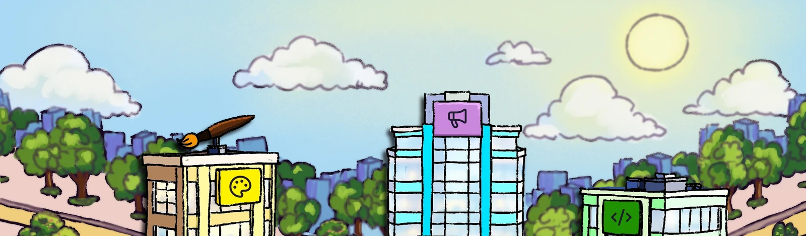
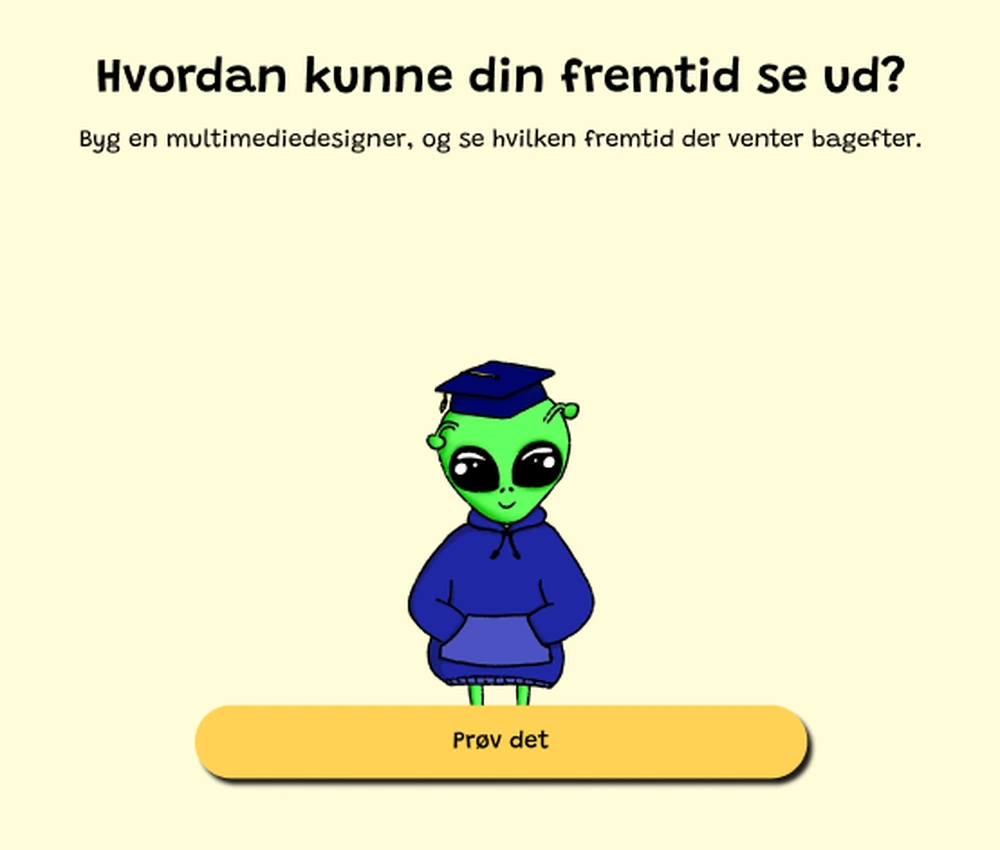
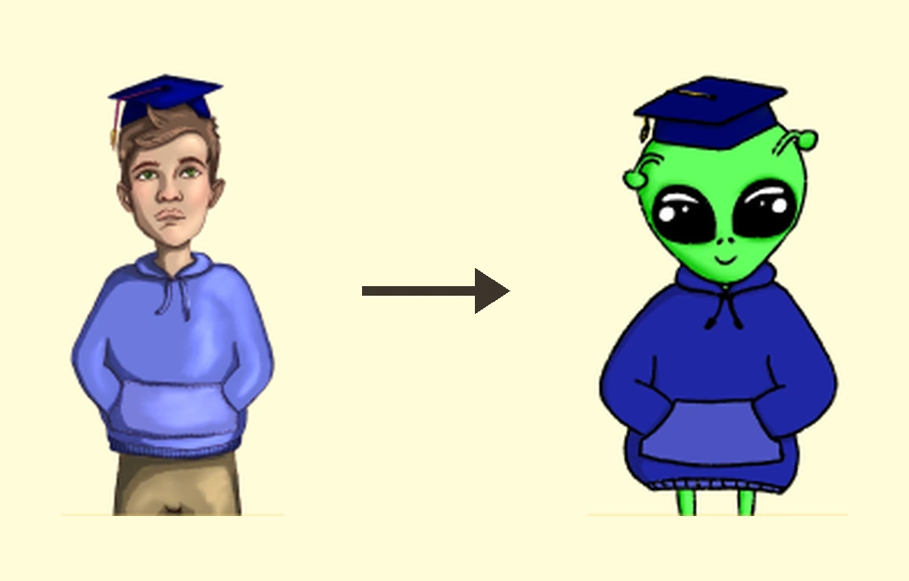
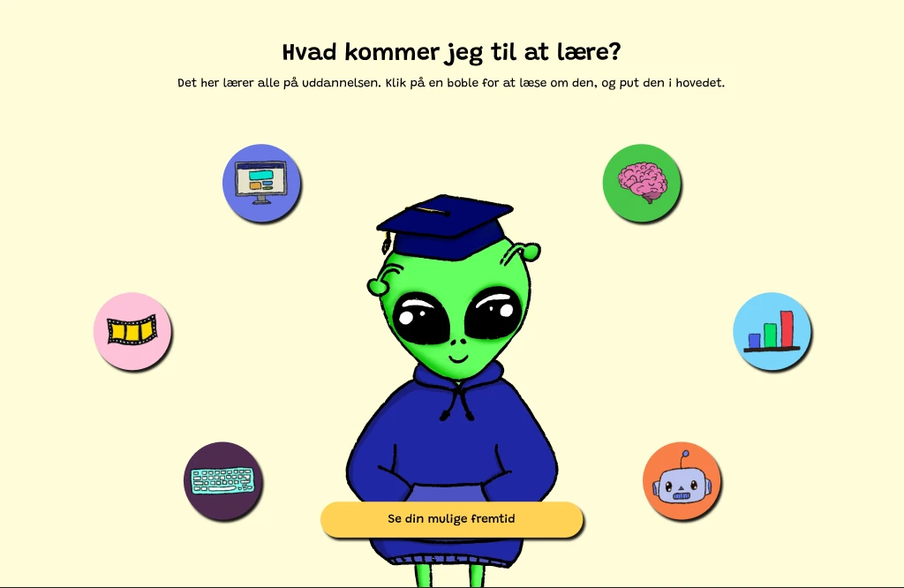
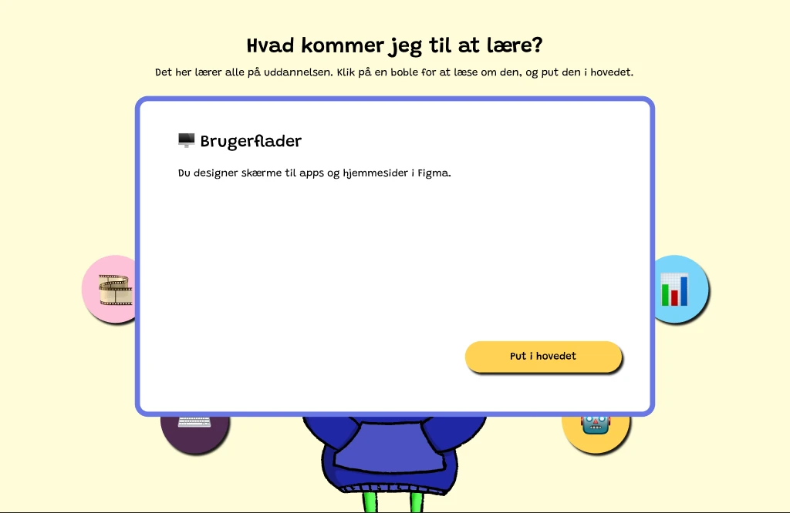
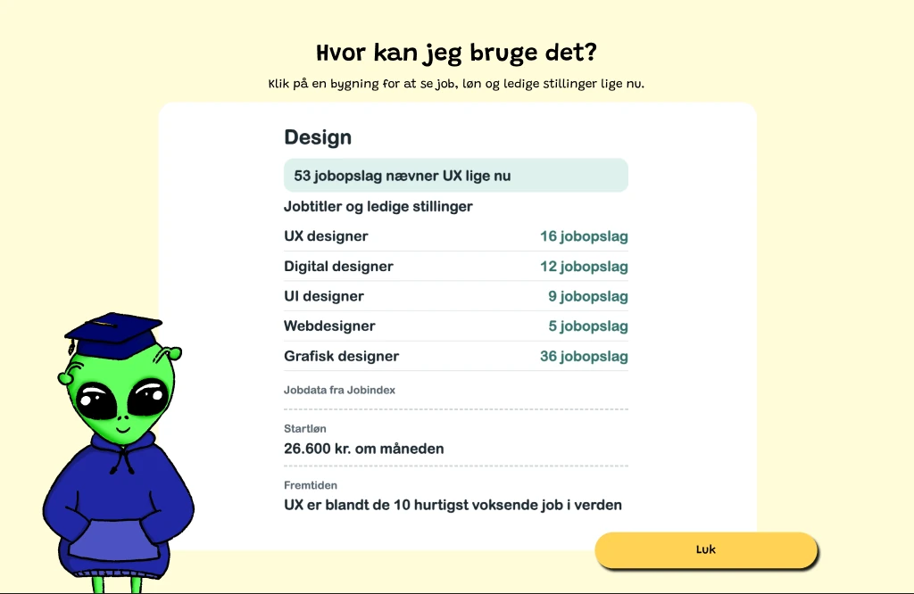
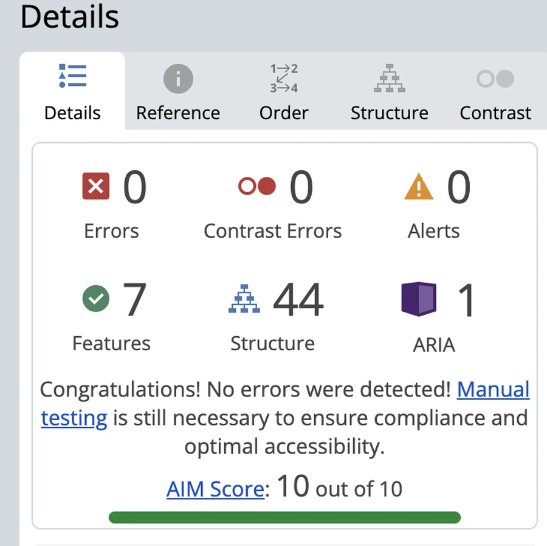

Concept · Illustration · Data · Code
Build a multimedia designer, then walk into the future those skills buy you.


We collected data on who actually attends the multimedia design educations. The gap that showed up was not in the numbers: almost nothing out there tells you what you can use the education for once you finish it. Fremtidsbyen is the answer to that. It shows where the roads lead.
The first version put a boy on the opening screen, which quietly repeats the thing a lot of girls already believe about who takes this education. An alien has no gender to read, it belongs to everybody, and it fits the future the city is selling. Same screen, completely different invitation.

The skills sit as bubbles around an empty designer. You click one, read what it means, and put it in their head. Nothing is explained before you ask for it, so the screen never turns into a wall of text, and by the end you have built the person rather than read about them.


Every building in the city is a job, and every card behind it is real data: the titles, how many positions were open on Jobindex that week, the average starting salary, and what the growth looks like towards 2030. The delivery is playful, the numbers are not.

The streets, the fountain, the trees and each of the four buildings are hand-drawn, so the thing being sold looks like somewhere you would want to end up rather than a diagram. The buildings sit on the drawing as separate pieces, which is what lets them light up and be clicked.

Ten out of ten in WAVE, with no errors, no contrast errors and no alerts. The page exists to make information easy to take in, and it is aimed at everyone deciding on an education, so it would have been strange to leave that unchecked.